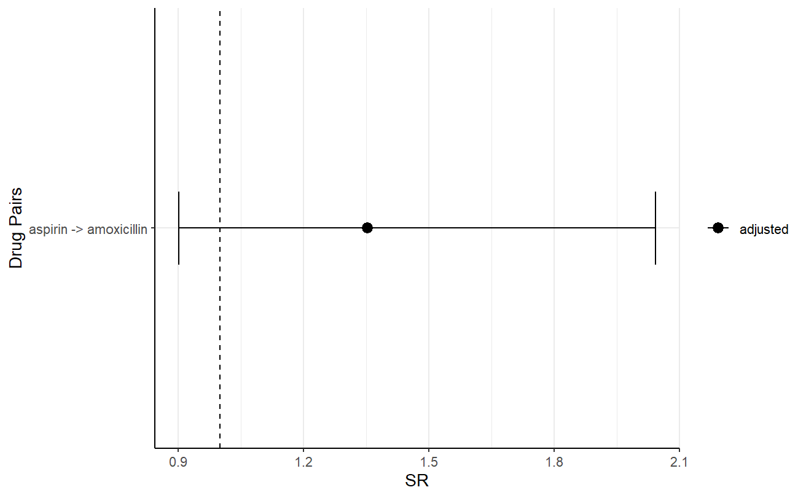
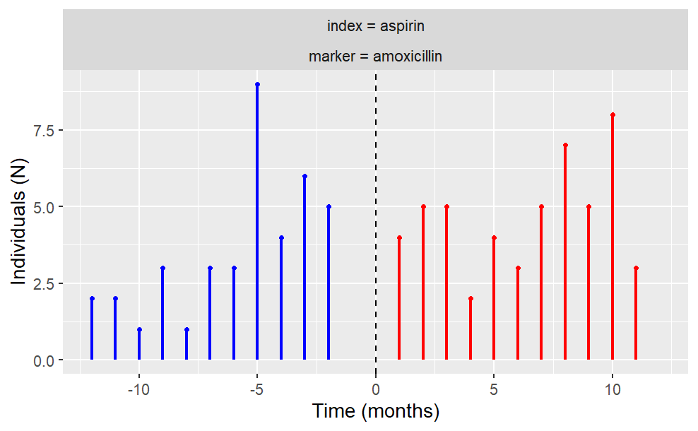

The goal of CohortSymmetry is to carry out the necessary calculations for Sequence Symmetry Analysis (SSA). It is highly recommended that this method is tested beforehand against well-known positive and negative controls. Such controls could be found using Pratt et al (2015).
Installation
You can install the development version of CohortSymmetry from GitHub with:
# install.packages("devtools")
devtools::install_github("oxford-pharmacoepi/CohortSymmetry")Example
Create a reference to data in the OMOP CDM format
The CohortSymmetry package is designed to work with data in the OMOP CDM (Common Data Model) format, so our first step is to create a reference to the data using the CDMConnector package.
As an example, we will be using Eunomia data set.
library(CDMConnector)
library(dplyr)
library(DBI)
library(duckdb)
db <- DBI::dbConnect(duckdb::duckdb(),
dbdir = CDMConnector::eunomia_dir())
cdm <- cdm_from_con(
con = db,
cdm_schema = "main",
write_schema = "main"
)Step 0: Instantiate two cohorts in the cdm reference
This will be entirely user’s choice on how to generate such cohorts. Minimally, this package requires two cohort tables in the cdm reference, namely the index_cohort and the marker_cohort.
If one wants to generate two drugs cohorts in cdm, DrugUtilisation is recommended. For merely illustration purposes, we will carry out PSSA on aspirin (index_cohort) against amoxicillin (marker_cohort)
library(dplyr)
library(DrugUtilisation)
cdm <- DrugUtilisation::generateIngredientCohortSet(
cdm = cdm,
name = "aspirin",
ingredient = "aspirin")
cdm <- DrugUtilisation::generateIngredientCohortSet(
cdm = cdm,
name = "amoxicillin",
ingredient = "amoxicillin")Step 1: generateSequenceCohortSet
In order to initiate the calculations, the two cohorts tables need to be intersected using generateSequenceCohortSet(). This process will output all the individuals who appeared on both tables according to a user-specified parameters. This includes timeGap, washoutWindow, indexMarkerGap and daysPriorObservation. Details on these parameters could be found on the vignette.
library(CohortSymmetry)
cdm <- generateSequenceCohortSet(
cdm = cdm,
indexTable = "aspirin",
markerTable = "amoxicillin",
name = "aspirin_amoxicillin"
)
#> ! cohort columns will be reordered to match the expected order:
#> cohort_definition_id, subject_id, cohort_start_date, and cohort_end_date.
cdm$aspirin_amoxicillin %>%
dplyr::glimpse()
#> Rows: ??
#> Columns: 6
#> Database: DuckDB v0.10.1 [xihangc@Windows 10 x64:R 4.3.1/C:\Users\xihangc\AppData\Local\Temp\Rtmpq80Ncd\file3ff054e0221b.duckdb]
#> $ cohort_definition_id <int> 1, 1, 1, 1, 1, 1, 1, 1, 1, 1, 1, 1, 1, 1, 1, 1, 1…
#> $ subject_id <int> 65, 119, 185, 144, 235, 197, 310, 280, 316, 331, …
#> $ cohort_start_date <date> 1968-07-29, 1967-05-28, 1947-04-07, 1978-10-30, …
#> $ cohort_end_date <date> 1969-06-18, 1968-04-07, 1947-04-12, 1979-09-04, …
#> $ index_date <date> 1969-06-18, 1967-05-28, 1947-04-07, 1978-10-30, …
#> $ marker_date <date> 1968-07-29, 1968-04-07, 1947-04-12, 1979-09-04, …Step 2: summariseSequenceRatios
To get the sequence ratios, we would need the output of the generateSequenceCohortSet() function to be fed into summariseSequenceRatios() The output of this process contains cSR(crude sequence ratio), aSR(adjusted sequence ratio) and confidence intervals.
res <- summariseSequenceRatios(cohort = cdm$aspirin_amoxicillin)
#> Joining with `by = join_by(days_prior_observation, washout_window,
#> index_marker_gap, combination_window, confidence_interval,
#> moving_average_restriction, cdm_name)`
#> ! The following column type were changed: • result_id: from character to
#> integer
res %>% glimpse()
#> Rows: 10
#> Columns: 13
#> $ result_id <int> 1, 1, 1, 1, 1, 1, 1, 1, 1, 1
#> $ cdm_name <chr> "Synthea synthetic health database", "Synthea synthet…
#> $ group_name <chr> "index_cohort_name &&& marker_cohort_name", "index_co…
#> $ group_level <chr> "1191_aspirin &&& 723_amoxicillin", "1191_aspirin &&&…
#> $ strata_name <chr> "overall", "overall", "overall", "overall", "overall"…
#> $ strata_level <chr> "overall", "overall", "overall", "overall", "overall"…
#> $ variable_name <chr> "crude", "adjusted", "crude", "crude", "adjusted", "a…
#> $ variable_level <chr> "sequence_ratio", "sequence_ratio", "sequence_ratio",…
#> $ estimate_name <chr> "point_estimate", "point_estimate", "lower_CI", "uppe…
#> $ estimate_type <chr> "numeric", "numeric", "numeric", "numeric", "numeric"…
#> $ estimate_value <chr> "1.43589743589744", "1.35265700483092", "0.9573119756…
#> $ additional_name <chr> "overall", "overall", "overall", "overall", "overall"…
#> $ additional_level <chr> "overall", "overall", "overall", "overall", "overall"…Step 3: visualise the results
The user could then visualise their results using a wide array of provided tools.
For example, the following produces a gt table.
gt_results <- tableSequenceRatios(result = res)
gt_results Note that flextable is also an option, users may specify this by using the
Note that flextable is also an option, users may specify this by using the type argument.
One could also visualise the plot, for example, the following is the plot of the adjusted sequence ratio.
plotSequenceRatios(result = res,
onlyaSR = T,
colours = "black")
The user also has the freedom to plot temporal trend like so:
plotTemporalSymmetry(cdm = cdm, sequenceTable = "aspirin_amoxicillin")
Disconnect from the cdm database connection
CDMConnector::cdmDisconnect(cdm = cdm)